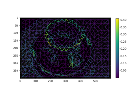
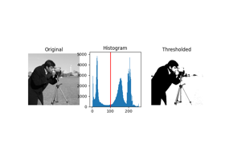
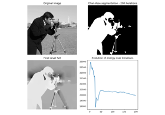
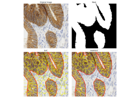
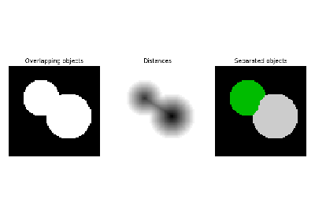
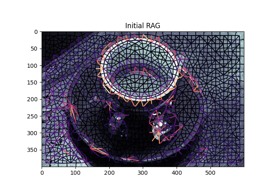
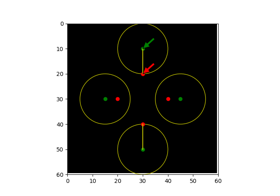
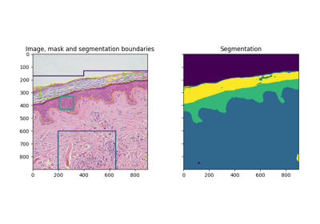

Segmentation of objects#

Region Boundary based Region adjacency graphs (RAGs)
Region Boundary based Region adjacency graphs (RAGs)



Thresholding


Chan-Vese Segmentation



Apply maskSLIC vs SLIC



Watershed segmentation


Comparison of segmentation and superpixel algorithms
Comparison of segmentation and superpixel algorithms



Hierarchical Merging of Region Boundary RAGs
Hierarchical Merging of Region Boundary RAGs


Explore and visualize region properties with pandas
Explore and visualize region properties with pandas

Hausdorff Distance


Trainable segmentation using local features and random forests
Trainable segmentation using local features and random forests


Use rolling-ball algorithm for estimating background intensity
Use rolling-ball algorithm for estimating background intensity